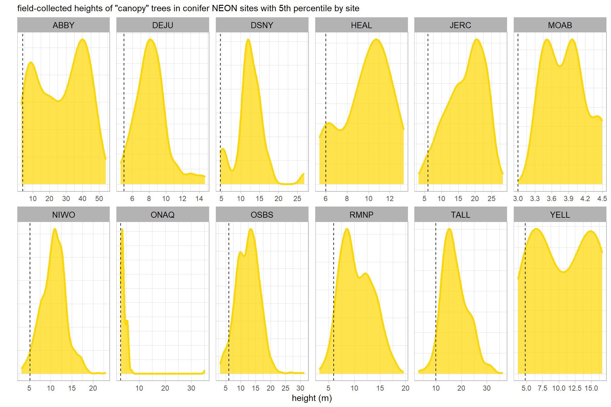
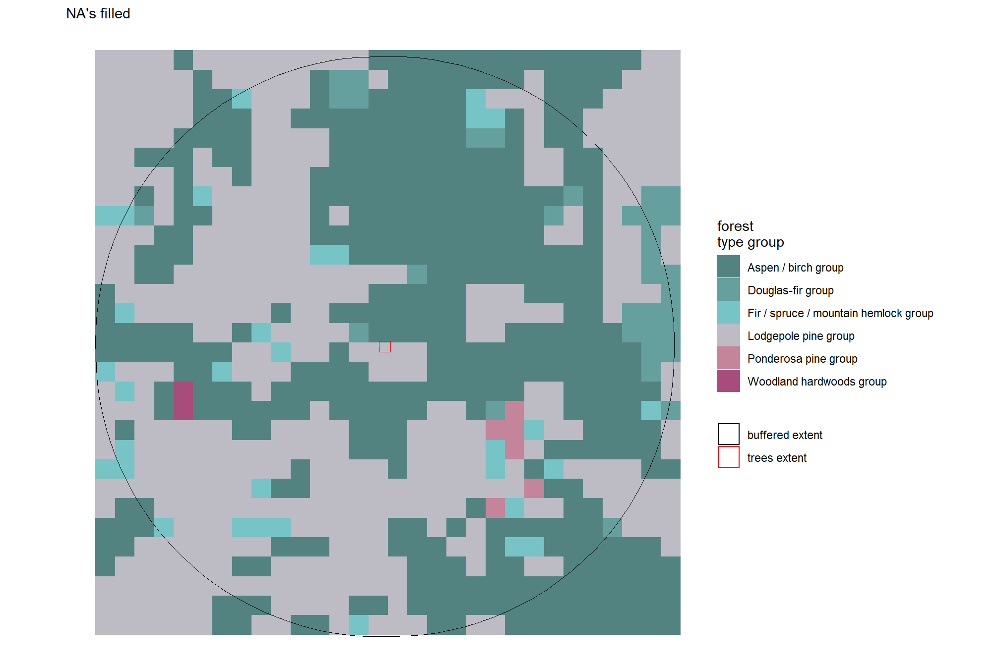
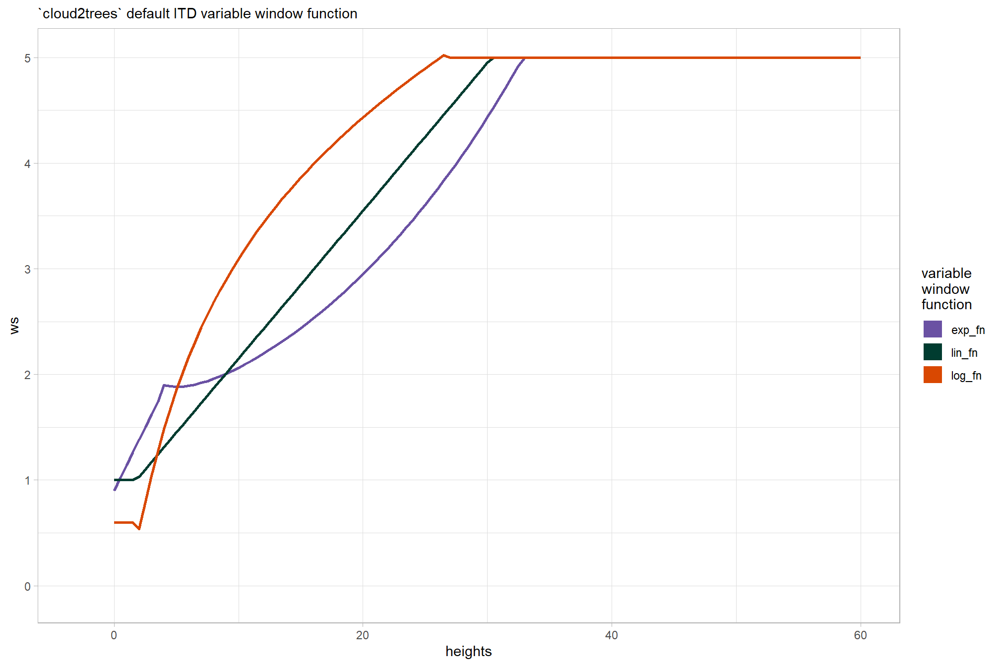
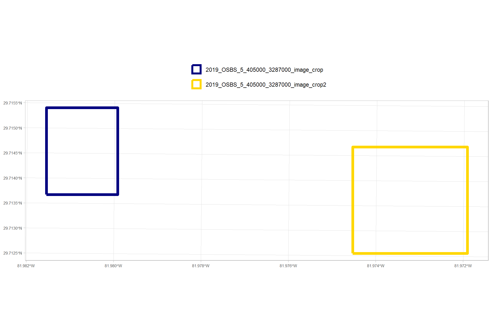
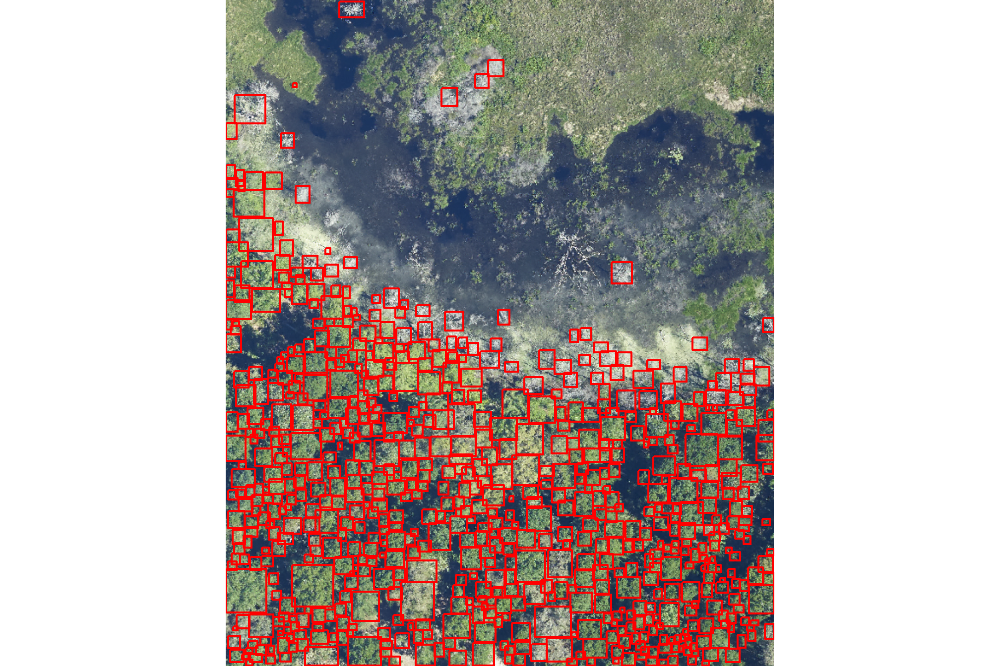
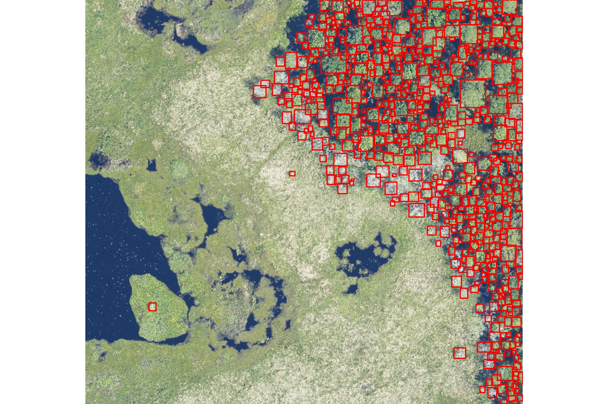
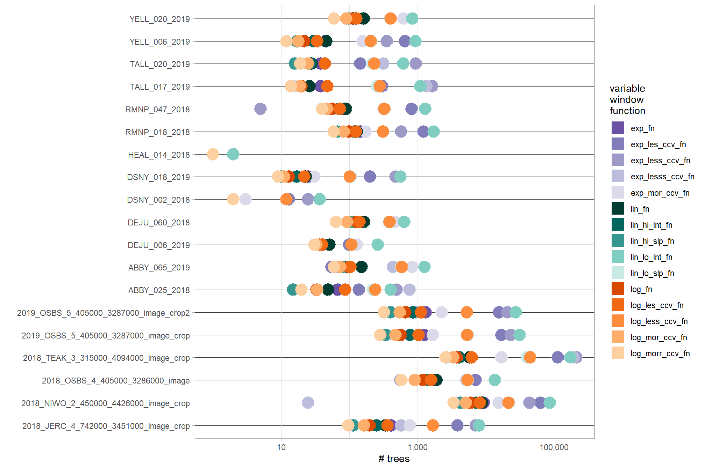
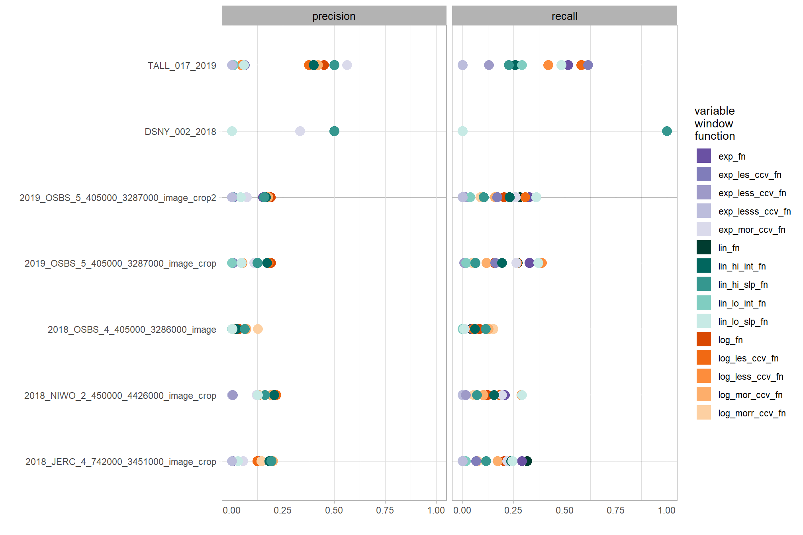
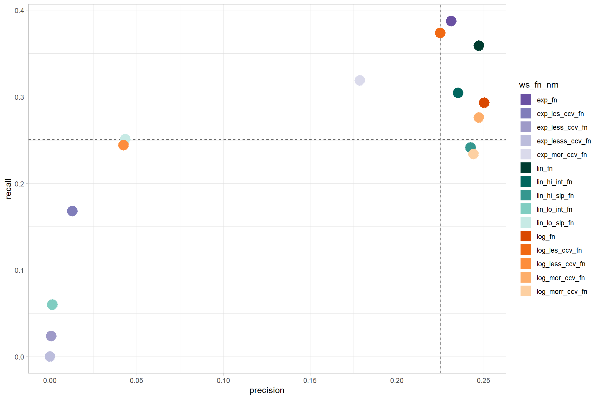

Section 4 Validate Tree Detection and Crown Delineation
In this section we’ll use the benchmark data made available in the NeonTreeEvaluation data set (Weinstein et al. 2021) to evaluate our process for lidar-based tree detection. We’ll implement our tree detection process via the [cloud2trees]https://github.com/georgewoolsey/cloud2trees) package
First, load the standard libraries
# bread-and-butter
library(tidyverse) # the tidyverse
library(viridis) # viridis colors
library(harrypotter) # hp colors
library(RColorBrewer) # brewer colors
library(scales) # work with number and plot scales
library(latex2exp)
# visualization
library(mapview) # interactive html maps
library(kableExtra) # tables
library(patchwork) # combine plots
library(ggnewscale) # ggnewscale
library(rgl) # rgl plotting
# spatial analysis
library(sf) # simple features
library(lidR) # lidar data
library(cloud2trees) # tha cloud2trees
library(NeonTreeEvaluation) # benchmark data4.1 NeonTreeEvaluation overview
Weinstein et al. (2021) developed:
a benchmark dataset of individual canopy crowns derived from multi-sensor imagery in the National Ecological Observatory Network (Table 1) that provides: 1) co-registered remote sensing data from multiple sensors (LiDAR, RGB imagery, and hyperspectral imagery) to allow comparisons of methods based on any single sensor (e.g., for LiDAR based methods), or any combination of sensors (e.g., combining RGB and hyperspectral), and 2) three types of evaluation data to allow assessing both ‘tree detection’, defined as the identifying the location of individual trees using evaluation data with a point at the crown center , and ‘crown delineation’ defined as identifying the boundary edge of crowns across a broad range of forest types. The benchmark is designed to allow flexibility in both workflow and sensor selection. (p. 2)
Table 1. Summary of datasets included in the benchmark dataset. All sensor data has been cropped to the extent of NEON field sampling plots.

Note the three data labeled as “Evaluation data” in the table. If you are asking “why three evaluation datasets?”, the authors provide some detail:
The inclusion of multiple evaluation types is critical because each type of evaluation data has strengths and limitations in evaluating model performance. Field collected stems are the most common evaluation data used in crown detection work due to high confidence that each stem represents a location of a single tree. However, the position of a tree stem can fail to accurately represent the position of the crown as viewed from above due to a combination of spatial errors in alignment with the image data and the tendency for trees to grow at acute angles (tree lean is not measured in the NEON data), such that the center of the crown and position of the stem can be offset by several meters….Image-annotated crowns are relatively easy to scale, allowing the collection of data for a wide range of forest types and for annotation of every visible crown in the image. Using image-annotated crowns supports the evaluation of methods across a broad range of forest types and allows both recall and precision to be calculated. However, since these annotations are not generated by an observer in the field there can be errors due to interpreting the images. This problem is solved using field-annotated crowns in which an observer annotates the remote-sensing imagery on a tablet while in the field [33]. The main limitation to this approach is that it is labor intensive, meaning that only a relatively small amount of validation data can be collected, making it difficult to obtain a large number of crowns across broad scales or assess model precision. Given the tradeoffs in each evaluation type, providing multiple criteria is a useful way of balancing the need for broad scale model verification with rigorous evaluation of field-based measurements. (p. 14-15)
To evaluate the performance of our aerial point cloud-based algorithm for 1) tree detection and 2) crown delineation using NeonTreeEvaluation we need to ensure our tree polygon data is formatted properly:
This package takes a standard submission format of predicted crowns in either bounding box or polygons as input and returns the evaluation scores of the detections for each of the three evaluation datasets. This reproducible workflow will facilitate creating a transparent process for future comparisons among crown detection algorithms. (p. 14)
The authors describe the “standard submission format” on the package GitHub:
Each row contains information for one predicted bounding box. The plot_name should be named the same as the files in the dataset without extension (e.g. SJER_021_2018 not SJER_021_2018.tif) and not the full path to the file on disk. Not all evaluation data are available for all plots. Functions like
evaluate_field_crownsandevaluate_image_crownswill look for matching plot name and ignore other plots. Depending on the speed of the algorithm, the simplest thing to do is predict all images in the RGB folder (see list_rgb()) and the package will handle matching images with the correct data to the correct evaluation procedure…Instead of bounding boxes, some methods may return polygons. To submit as polygons, create a single unprojected shapefile with polygons in image coordinates. Polygons must be complete with no holes. Here is an example of the above csv file in polygon format. Here the xmin, xmax, etc. columns are ignored since the information is stored in the geometry data.
Simple feature collection with 6 features and 7 fields
geometry type: POLYGON
dimension: XY
bbox: xmin: 30.39723 ymin: 122.1164 xmax: 397.5746 ymax: 400
CRS: NA
xmin ymin xmax ymax score label plot_name
1 41.01716 230.8854 151.08607 342.6985 0.8098674 Tree DSNY_014_2019
2 357.32129 122.1164 397.57458 159.3758 0.6968824 Tree DSNY_014_2019
3 30.39723 136.9157 73.79434 184.9473 0.5713338 Tree DSNY_014_2019
4 260.65921 285.6689 299.68811 326.7933 0.5511004 Tree DSNY_014_2019
5 179.34564 371.6130 232.49385 400.0000 0.4697072 Tree DSNY_014_2019
6 316.27377 378.9802 363.67542 400.0000 0.3259409 Tree DSNY_014_2019
st_sfc.lst.
1 POLYGON ((41.01716 230.8854...
2 POLYGON ((357.3213 122.1164...
3 POLYGON ((30.39723 136.9157...
4 POLYGON ((260.6592 285.6689...
5 POLYGON ((179.3456 371.613,...
6 POLYGON ((316.2738 378.9802...So we are going to: run cloud2trees::cloud2trees() on all of the lidar data for which there is evaluation (i.e. ground truth) data, combine into a single tree list with a row unique by a detected tree and the plot_name column (e.g. “SJER_021_2018”), as an unprojected sf data with polygons in image coordinates. We may need to run cloud2trees::simplify_multipolygon_crowns() prior to submission.
4.2 lidar data in NeonTreeEvaluation
we first have to download evaluation data from the Zenodo archive (1GB), use the NeonTreeEvaluation::download() function to place the data in the correct package location. Download the much larger training data, set training=TRUE. We are going to use the training data to determine the “best” ITD window function to use for a given NEON site since the cloud2trees package strongly recommends that “a different window size function is defined for each region of your study area with significantly different forest structure”.
Weinstein et al. (2021) describe the training data:
During our research on canopy crown detection algorithms, we annotated many geographic tiles separate from the evaluation data. The training sites were selected to capture a range of forest conditions…The training tiles were chosen at random from the NEON data portal, with the requirement that they did not contain a large amount of missing data and they did not overlap with any evaluation plots. Depending on the tree density at the site, we either annotated the entire 1 km2 tile or cropped it to a smaller size to create more tractable sizes for annotation. This data is released alongside the benchmark dataset; however, our goal is to promote the best possible crown-delineation algorithm regardless of training data, and it is not necessary to use this training data to generate predictions. Given the large size of training tiles, the training annotations were less thoroughly reviewed and were only based on the RGB imagery. (p. 11)
Note: the current version of NeonTreeEvaluation::download() does not download the training data even if setting training = T. I dug around and found the archive of the training data at https://zenodo.org/records/5914554. I’ll need to circle back with a GitHub pull request to fix the NeonTreeEvaluation::download() function so that it gets the training data which is hosted at the link mentioned previously and does not reside at where the function currently points to (https://zenodo.org/records/4770593). I also manually copied the files in “NeonTreeEvaluation/extdata/NeonTreeEvaluation/training/RGB” to “NeonTreeEvaluation/extdata/NeonTreeEvaluation/evaluation/RGB” so that evaluation could be performed. See list.dirs(system.file(package = "NeonTreeEvaluation"),recursive=T)
4.2.1 Training data
Let’s find what training data is available. We’ll use this data to determine the best window size function for use in our individual tree detection (ITD) process
# i did some digging around and the TRAINING lidar data is here
training_dir_temp <- system.file(package = "NeonTreeEvaluation", "extdata", "NeonTreeEvaluation", "training", "LiDAR")
# files
training_files_temp <- training_dir_temp %>% list.files(recursive = T, pattern = ".*\\.(laz|las)$", full.names = T) %>% unique()let’s pull out all NEON sites with point cloud data and create a data frame for tracking purposes
# let's pull out all sites with `.laz` data and create a data frame for tracking purposes
lidar_df <- training_files_temp %>%
dplyr::as_tibble() %>%
dplyr::rename(f_path = 1) %>%
# create some other variables
dplyr::mutate(
plot_name = f_path %>% basename() %>% stringr::str_remove_all("\\.(laz|las)$")
, data_type = "training"
)
# what?
lidar_df %>% dplyr::glimpse()## Rows: 16
## Columns: 3
## $ f_path <chr> "C:/Program Files/R/R-4.3.0/library/NeonTreeEvaluation/extda…
## $ plot_name <chr> "2018_BART_4_322000_4882000_image_crop", "2018_HARV_5_733000…
## $ data_type <chr> "training", "training", "training", "training", "training", …4.2.2 Evaluation data
Let’s find what evaluation data is available. We’ll use this data to evaluate our point cloud-based tree detection methodology.
# i did some digging around and the EVALUATION lidar data is here
eval_dir_temp <- system.file(package = "NeonTreeEvaluation", "extdata", "NeonTreeEvaluation", "evaluation", "LiDAR")
# files
eval_files_temp <- eval_dir_temp %>% list.files(recursive = T, pattern = ".*\\.(laz|las)$", full.names = T) %>% unique()bind the rows onto our tracking data
lidar_df <- lidar_df %>%
dplyr::bind_rows(
eval_files_temp %>%
dplyr::as_tibble() %>%
dplyr::rename(f_path = 1) %>%
# create some other variables
dplyr::mutate(
plot_name = f_path %>% basename() %>% stringr::str_remove_all("\\.(laz|las)$")
, data_type = "evaluation"
)
) %>%
dplyr::mutate(data_type = as.factor(data_type))4.2.3 Filter for ground truth data
that’s a lot of files…let’s only process the sites with evaluation data or image annotated crowns classified as training annotations
# there are functions to get a list of all evaluation data
# let's use these to filter our lidar files
plotnames_temp <- c(
NeonTreeEvaluation::list_annotations()
, NeonTreeEvaluation::list_field_stems()
# this one includes file paths, so we have to clean
, NeonTreeEvaluation::list_field_crowns() %>%
stringr::str_match(pattern="(\\w+).tif") %>%
.[,2]
# there are plot_names from the submission data too
, NeonTreeEvaluation::submission_polygons$plot_name %>% unique()
, NeonTreeEvaluation::submission$plot_name %>% unique()
# make sure we have all image annotated crowns
, system.file(package = "NeonTreeEvaluation", "extdata", "NeonTreeEvaluation", "annotations") %>%
list.files() %>%
basename() %>%
stringr::str_remove_all("\\.(xml)$") %>%
unique()
) %>%
unique()
# huh?
# plotnames_temp %>% sample(11) %>% sort()The field collected stem validation data will take a bit more to get the actual plots for which there is validation data. We have to pull clean_field_data() from NeonTreeEvaluation as an internal function which is used to filter NeonTreeEvaluation::field…we’ll than match other filters used in NeonTreeEvaluation::evaluate_field_stems()
# this is an internal function from `NeonTreeEvaluation::evaluate_field_stems()`
clean_field_data<-function(field){
field$area<-field$maxCrownDiameter*field$ninetyCrownDiameter
field<-field %>% filter(!is.na(itcEasting),!stringr::str_detect(eventID,"2014"),growthForm %in% c("single bole tree","multi-bole tree","small tree","sapling"),stemDiameter>15) %>%
droplevels() %>%
filter(height>3|is.na(height))
#Limit difference in heights
to_remove<-field %>% group_by(individualID) %>%
summarize(mean=mean(height),sum_difference = abs(sum(diff(height)))) %>%
filter(sum_difference > 8)
field<-field %>%
filter(!individualID %in% to_remove$individualID)
}
# apply all the filters for field collected stems used in `NeonTreeEvaluation::evaluate_field_stems()`
field_plots_temp <- NeonTreeEvaluation::field %>%
clean_field_data() %>%
dplyr::filter(height>3) %>%
dplyr::mutate(plotID=as.character(plotID)) %>%
dplyr::pull(plotID) %>%
unique()filter our lidar data list to keep only point clouds in plots for which there is validation data
lidar_df <-
lidar_df %>%
#filter based on plots in evaluation data
dplyr::filter(plot_name %in% plotnames_temp) %>%
# filter for field plots
# pull out site
dplyr::mutate(
plot_temp = stringr::str_extract(
string = plot_name
, pattern = field_plots_temp %>%
unique() %>%
toupper() %>%
paste(collapse = "|")
)
) %>%
# flag the data with image annotated crowns or field stems which we'll use to train our ws fn
# if this doesn't make sense yet, keep reading down
dplyr::mutate(
has_image_annotation = plot_name %in% NeonTreeEvaluation::list_annotations()
, has_field_stems = !is.na(plot_temp)
) %>%
# keep only those with field stems or image annotated crowns
dplyr::filter(has_image_annotation | has_field_stems) %>%
dplyr::select(-c(plot_temp))We need to put the NEON site identifier in our data. We’ll use the field-collected tree data from NEON sites made available which will also serve to filter our point cloud list for forested NEON sites only.
# get a list of siteID
neon_sites_temp <-
NeonTreeEvaluation::field %>%
sf::st_drop_geometry() %>%
dplyr::distinct(siteID) %>%
# there are siteID's here too
dplyr::bind_rows(
NeonTreeEvaluation::crown_polygons %>%
sf::st_drop_geometry() %>%
dplyr::distinct(siteID)
) %>%
dplyr::mutate(siteID = as.character(siteID)) %>%
dplyr::distinct(siteID) %>%
dplyr::pull(siteID)
# extract the siteID from the plot_name
lidar_df <- lidar_df %>%
# pull out site
dplyr::mutate(
siteID = stringr::str_extract(
string = plot_name
, pattern = neon_sites_temp %>%
unique() %>%
toupper() %>%
paste(collapse = "|")
)
) %>%
dplyr::filter(!is.na(siteID))what is the breakdown of training vs eval?
## # A tibble: 2 × 2
## data_type n
## <fct> <int>
## 1 evaluation 872
## 2 training 154.2.4 Filter for conifer sites
we will want to limit our evaluation to only sites with conifer trees since cloud2trees implements methods developed specifically to quantify conifer forest structure that may not be appropriate for other forest types
we’ll use the field data in the package to look for NEON sites with conifer trees. We’ll use the NEON plant list to identify conifer species: https://data.neonscience.org/taxonomic-lists?taxonTypeCode=PLANT (click “DOWNLOAD TAXONOMIC LIST”). We’ll filter for species belonging to Class Pinopsida.
conifer_spp <-
readr::read_csv(
"../data/OS_TAXON_PLANT-20220330T142149.csv"
, show_col_types = F
, progress = F
) %>%
dplyr::filter(
tolower(`class`) %in% c("pinopsida")
) %>%
dplyr::mutate(
taxonID = toupper(taxonID)
, vernacularName = tolower(vernacularName)
, genus = stringr::str_to_title(genus)
) %>%
dplyr::distinct(taxonID, vernacularName, genus)what are some of these conifers?
# huh?
conifer_spp %>%
dplyr::slice_sample(n = 10) %>%
kableExtra::kbl(caption = "Conifer species taxonID examples") %>%
kableExtra::kable_styling()| taxonID | vernacularName | genus |
|---|---|---|
| PODOCSPP | plum pine | Podocarpus |
| PIPOP | ponderosa pine | Pinus |
| JUNIP | juniper | Juniperus |
| PODOCASPP | NA | NA |
| PICO3 | coulter pine | Pinus |
| CRJA3 | japanese cedar | Cryptomeria |
| LAOC | western larch | Larix |
| ABAM | pacific silver fir | Abies |
| PINUSSPP | pine | Pinus |
| PINI | austrian pine | Pinus |
filter for NEON sites that have conifer trees based on field data from all terrestrial NEON sites with qualifying woody vegetation: https://data.neonscience.org/data-products/DP1.10098.001
conifer_sites <- NeonTreeEvaluation::field %>%
dplyr::left_join(
conifer_spp %>% dplyr::mutate(is_conifer = 1)
, by = "taxonID"
) %>%
dplyr::mutate(is_conifer = dplyr::coalesce(is_conifer, 0)) %>%
dplyr::group_by(siteID) %>%
dplyr::summarise(
tot = dplyr::n()
, conifer = sum(is_conifer)
, latitude = mean(plotLatitude)
, longitude = mean(plotLongitude)
) %>%
dplyr::ungroup() %>%
dplyr::mutate(pct_conifer = conifer/tot)what is the breakdown of woody vegetation sampled in NEON sites by the percent conifer?
conifer_sites %>%
dplyr::select(-c(longitude,latitude)) %>%
dplyr::arrange(desc(pct_conifer), desc(tot)) %>%
dplyr::slice_head(n = 19) %>%
kableExtra::kbl(
caption = "Conifers in NEON sites"
, digits = 2
, col.names = c(
"site","total trees","conifer trees", "% conifer"
)
) %>%
kableExtra::kable_styling()| site | total trees | conifer trees | % conifer |
|---|---|---|---|
| NIWO | 1804 | 1804 | 1.00 |
| ONAQ | 88 | 88 | 1.00 |
| MOAB | 29 | 29 | 1.00 |
| HEAL | 21 | 21 | 1.00 |
| YELL | 13 | 13 | 1.00 |
| TEAK | 621 | 619 | 1.00 |
| DEJU | 173 | 169 | 0.98 |
| ABBY | 268 | 241 | 0.90 |
| RMNP | 1375 | 1083 | 0.79 |
| SOAP | 503 | 389 | 0.77 |
| DSNY | 34 | 26 | 0.76 |
| TALL | 2144 | 1521 | 0.71 |
| OSBS | 1288 | 858 | 0.67 |
| JERC | 562 | 336 | 0.60 |
| HARV | 3736 | 1701 | 0.46 |
| TREE | 1303 | 430 | 0.33 |
| BART | 3636 | 1022 | 0.28 |
| BONA | 188 | 48 | 0.26 |
| STEI | 754 | 151 | 0.20 |
let’s only keep NEON sites with a minimum threshold of the woody vegetation sampled as conifer
now join on our proportion of conifer by NEON site to our lidar data list
lidar_df <- lidar_df %>%
dplyr::left_join(conifer_sites, by = "siteID") %>%
sf::st_as_sf(coords = c("longitude","latitude"), crs = 4326, remove = F)before we filter for conifer sites only, let’s check which sites we have lidar data from and whether or not they are classified as a conifer site based on this threshold of 50%
lidar_df %>%
dplyr::group_by(siteID) %>%
dplyr::summarise(pct_conifer = dplyr::first(pct_conifer)) %>%
dplyr::mutate(
is_conifer_site = pct_conifer>min_conifer_pct
, pct_conifer = scales::percent(pct_conifer,accuracy=0.1)
) %>%
mapview::mapview(
zcol = "is_conifer_site", legend = T
, layer.name = "conifer site?"
, col.regions = viridis::viridis(n=2,begin = 0.3,end = 0.7)
)looks reasonable, let’s filter our point cloud processing data for conifer sites based on our proportional threshold of 50%
# data frame of sites
lidar_df <- lidar_df %>%
dplyr::filter(pct_conifer>min_conifer_pct) %>%
# filter out corrupt las files
# these don't load in lasR...maybe extrabytes issue???
dplyr::filter(
!plot_name %in% c(
"NIWO_005_2018"
, "SOAP_014_2018"
, "MOAB_003_2018"
, "NIWO_009_2018"
, "TEAK_028_2018"
, "YELL_058_2020"
, "RMNP_011_2018"
, "YELL_030_2018"
, "YELL_051_2019"
, "SOAP_014_2019"
, "TEAK_005_2018"
, "DSNY_019_2019"
, "HEAL_004_2019"
, "SOAP_049_2018"
, "TEAK_016_2019"
, "YELL_006_2018"
)
)what NEON sites have conifers and training/evaluation data?
lidar_df %>%
sf::st_drop_geometry() %>%
dplyr::group_by(siteID) %>%
dplyr::summarise(
n = dplyr::n()
, training_plots = sum(ifelse(data_type=="training",1,0))
, evaluation_plots = sum(ifelse(data_type=="evaluation",1,0))
, evaluation_ann_plots = sum(ifelse(has_image_annotation & data_type=="evaluation",1,0))
, evaluation_fld_plots = sum(ifelse(has_field_stems & data_type=="evaluation",1,0))
) %>%
dplyr::arrange(desc(n)) %>%
dplyr::select(-n) %>%
kableExtra::kbl(
caption = "NEON sites with conifers and lidar plots"
, col.names = c(
"site","training plots","evaluation plots"
,"evaluation plots<br>with ground truth<br>image ann. crowns"
,"evaluation plots<br>with ground truth<br>field collected stems"
)
, escape = F
) %>%
kableExtra::kable_styling()| site | training plots | evaluation plots |
evaluation plots with ground truth image ann. crowns |
evaluation plots with ground truth field collected stems |
|---|---|---|---|---|
| OSBS | 3 | 57 | 14 | 57 |
| TEAK | 1 | 51 | 51 | 0 |
| NIWO | 1 | 42 | 10 | 41 |
| DEJU | 0 | 42 | 0 | 42 |
| TALL | 0 | 42 | 2 | 42 |
| ABBY | 0 | 28 | 2 | 27 |
| JERC | 1 | 24 | 6 | 24 |
| DSNY | 0 | 21 | 6 | 18 |
| RMNP | 0 | 20 | 0 | 20 |
| HEAL | 0 | 6 | 0 | 6 |
| YELL | 0 | 5 | 0 | 5 |
| MOAB | 0 | 3 | 0 | 3 |
| SOAP | 0 | 2 | 2 | 0 |
| ONAQ | 0 | 1 | 1 | 1 |
note that the sum of the evaluation plots with image annotated crowns and with field collected stems does not necessarily equate to the number of evaluation plots since one plot can have both image annotated and field collected data.
what is the spatial distribution of these conifer sites for which lidar data is available?
lidar_df %>%
dplyr::group_by(siteID) %>%
dplyr::summarise(
training_plots = sum(ifelse(data_type=="training",1,0))
, evaluation_plots = sum(ifelse(data_type=="evaluation",1,0))
) %>%
dplyr::ungroup() %>%
dplyr::mutate(
data_type = dplyr::case_when(
training_plots>0 & evaluation_plots==0 ~ "training"
, training_plots>0 & evaluation_plots>0 ~ "training+evaluation"
, training_plots==0 & evaluation_plots>0 ~ "evaluation"
, T ~ "other"
)
) %>%
mapview::mapview(
zcol = "data_type", legend = T
, layer.name = "data type"
, col.regions = viridis::magma(n=2,begin = 0.2,end = 0.8)
)4.2.5 Augment training data
While the map above shows that the training and evaluation data are in places that we expect to have conifers, the spatial coverage of training data is limited. This is especially true when one considers that even NEON sites that are close in proximity can have very different forest types. For example, the “NIWO” site north west of Denver, CO has both training and evaluation data and features vegetation described as “On the low-elevation east and south facing slopes, lodgepole pine (Pinus contorta) and aspen (Populus tremuloides) groves dominate the landscape” (source). While the RMNP site that is close in proximity and lacks training data has vegetation described as “vegetation in the lower elevation areas of RMNP are characteristic of the lower montane ecosystem and include an open canopy of ponderosa pine (Pinus ponderosa), juniper (Juniperus sp.), and Douglas fir (Pseudotsuga menziesii)” (source). As such, we will augment the training for NEON sites that lack dedicated training data by:
- if a site has at least 5 image annotated crown validation data sets borrowing two plots to validate against
NeonTreeEvaluation::evaluate_image_crowns(). We are preferring the image annotated crowns for use in training over the field collected stems to align with the provided training data in the original manuscript - otherwise, if a site has at least 5 field collected stem validation data sets, borrow two plots to validate against
NeonTreeEvaluation::evaluate_field_stems() - otherwise, there will be no training data for that NEON site and the “best” overall variable window function will be used
# set seed to replicate results
set.seed(99)
# randomly assign 2 plots as training:
lidar_df <-
lidar_df %>%
dplyr::ungroup() %>%
# generate rand
dplyr::mutate(rand = runif(n=dplyr::n())) %>%
dplyr::arrange(siteID, rand) %>%
# count training/eval by site and flag new training
dplyr::group_by(siteID) %>%
dplyr::mutate(
training_plots = sum(ifelse(data_type=="training",1,0))
, evaluation_ann_plots = sum(ifelse(has_image_annotation & data_type=="evaluation",1,0))
, evaluation_fld_plots = sum(ifelse(has_field_stems & data_type=="evaluation",1,0))
, is_new_training = dplyr::case_when(
training_plots == 0 & evaluation_ann_plots>=5 & dplyr::row_number()<=2 ~ T
, training_plots == 0 &
evaluation_ann_plots<5 &
evaluation_fld_plots>=5 &
dplyr::row_number()<=2 ~ T
, T ~ F
)
) %>%
dplyr::ungroup() %>%
# update training/eval flag
dplyr::mutate(
data_type = ifelse(is_new_training==T,"training",as.character(data_type)) %>%
as.factor()
) %>%
dplyr::select(-c(rand,tot,conifer,tidyselect::ends_with("_plots")))
# save
readr::write_csv(lidar_df, "../data/NeonTreeEvaluation_lidar_df.csv", append = F, progress = F)check our new table of training/evaluation data by NEON site after we augmented the training data
lidar_df %>%
sf::st_drop_geometry() %>%
dplyr::group_by(siteID) %>%
dplyr::summarise(
n = dplyr::n()
, training_plots = sum(ifelse(data_type=="training",1,0))
, evaluation_plots = sum(ifelse(data_type=="evaluation",1,0))
) %>%
dplyr::arrange(desc(n)) %>%
dplyr::select(-n) %>%
kableExtra::kbl(
caption = "NEON sites with conifers and lidar plots using augmented training data"
, col.names = c(
"site","training plots","evaluation plots"
)
) %>%
kableExtra::kable_styling()| site | training plots | evaluation plots |
|---|---|---|
| OSBS | 3 | 57 |
| TEAK | 1 | 51 |
| NIWO | 1 | 42 |
| DEJU | 2 | 40 |
| TALL | 2 | 40 |
| ABBY | 2 | 26 |
| JERC | 1 | 24 |
| DSNY | 2 | 19 |
| RMNP | 2 | 18 |
| HEAL | 2 | 4 |
| YELL | 2 | 3 |
| MOAB | 0 | 3 |
| SOAP | 0 | 2 |
| ONAQ | 0 | 1 |
what is the overall breakdown of training vs evaluation now after all the filtering and augmenting?
## # A tibble: 2 × 2
## data_type n
## <fct> <int>
## 1 evaluation 330
## 2 training 204.3 Height threshold for “canopy” trees
We’ll process the point cloud and get a tree list using our cloud2trees::cloud2trees() method with all default settings except for the ITD window function (see section below). However, an important consideration in the evaluation of our method is that the (Weinstein et al. 2021) benchmark was developed specifically for “canopy” trees and the field-collected stems evaluation data only includes >10 cm DBH trees:
NEON field crews sample all trees within a plot that are greater than 10cm DBH, regardless of whether the tree crown can be seen in the remote sensing image data. While understory tree detection is an important area of future work, the scope of this benchmark is focused on crowns in the canopy that are visible from above. (p. 10)
In order to align our point cloud-based algorithm with the evaluation data inclusion of only “canopy” trees, we’ll identify the shortest live tree in the field-collected stems evaluation data by NEON site. We’ll use this value to filter our cloud2trees::cloud2trees() tree list in post-processing. This filtering process is analogous to setting a diameter threshold during a forest inventory (e.g. >10 cm DBH), meaning only trees with a DBH of 10 cm, for example, or greater are tallied and measured which a common practice because it focuses on trees that are potentially merchantable.
In working with the NeonTreeEvaluation::field data we’ll use the filters found in clean_field_data() from NeonTreeEvaluation as an internal function
# set the percentile to determine the shortest live tree in the field-collected stems evaluation data
# using a percentile helps to avoid outlier measurements that might occur if we used a minimum value
percentile_for_ht <- 0.05
# get non-na heights from neon field measured trees
neon_field_heights <-
NeonTreeEvaluation::field %>%
# filters found in `clean_field_data()`
dplyr::filter(
!is.na(itcEasting)
, !stringr::str_detect(eventID,"2014")
, growthForm %in% c("single bole tree","multi-bole tree","small tree","sapling")
, stemDiameter>15
, (height>3|is.na(height))
) %>%
# getting only non-na
dplyr::filter(!is.na(height)) %>%
# and finally, filter for our conifer sites only
dplyr::inner_join(
conifer_sites %>%
dplyr::filter(pct_conifer>min_conifer_pct)
)
# get 5th tile ht by site
neon_site_heights <-
neon_field_heights %>%
dplyr::group_by(siteID) %>%
dplyr::summarise(
site_prcntl_ht = quantile(floor(height), probs = percentile_for_ht, na.rm = T)
) %>%
dplyr::ungroup()look at the summary of height data across all sites and plots
## Min. 1st Qu. Median Mean 3rd Qu. Max.
## 3.10 9.60 12.80 13.75 16.50 53.90what does this look like for each NEON site?
neon_field_heights %>%
dplyr::inner_join(neon_site_heights, by = "siteID") %>%
ggplot2::ggplot(ggplot2::aes(x = height, group = siteID)) +
ggplot2::geom_density(color = "gold",fill = "gold", alpha = 0.7, lwd = 1.2) +
ggplot2::geom_vline(aes(xintercept = site_prcntl_ht), linetype = "dashed") +
ggplot2::facet_wrap(facets = vars(siteID), ncol = 6, scales = "free") +
ggplot2::scale_x_continuous(breaks = scales::breaks_extended(6)) +
ggplot2::labs(
x = "height (m)", y = ""
, subtitle = paste0(
"field-collected heights of \"canopy\" trees in conifer NEON sites with "
, scales::number(percentile_for_ht*100, accuracy = 1)
, "th percentile by site"
)
) +
ggplot2::theme_light() +
ggplot2::theme(
axis.text.y = ggplot2::element_blank()
, axis.ticks.y = ggplot2::element_blank()
, strip.text = ggplot2::element_text(color = "black", size = 10)
)
what is the overall 5th percentile to use for minimum height?
## 5%
## 5let’s attach this to our data frame of lidar data files
4.4 Example validation process
now that we have our lidar data and post-processing height filter that we can test our point cloud-based tree detection and crown segmentation process against, let’s walk through the validation for a single point cloud
we’ll test with a single evaluation point cloud
lidar_df_row <- lidar_df %>%
sf::st_drop_geometry() %>%
dplyr::mutate(
rn = ifelse(
data_type=="evaluation" & has_image_annotation & has_field_stems
,dplyr::row_number()
,NA
)) %>%
dplyr::filter(!is.na(rn)) %>%
dplyr::slice(1) %>%
dplyr::pull(rn)
# lidar_df$f_path[lidar_df_row] %>% lidR::readLAS() %>% lidR::st_crs()4.4.1 Preliminaries
4.4.1.1 View the point cloud
this step isn’t necessary for validation, but let’s see what this point cloud data looks like
We can plot the point cloud with and color by the point height
lidar_df$f_path[lidar_df_row] %>%
lidR::readLAS() %>%
lidR::plot(
color = "Z", breaks = "quantile", bg = "white", legend = T
, pal = harrypotter::hp(n=50, house = "gryffindor")
)there are trees in there for sure (and conifer trees by the looks of it)
let’s look at the RGB imagery and image annotated crowns (notice that the NeonTreeEvaluation commands rely on the deprecated raster package :)
# read rgb
rgb_temp <- lidar_df$plot_name[lidar_df_row] %>%
NeonTreeEvaluation::get_data(type = "rgb") %>%
raster::stack()
# read image annotated crown data and make polygons
polys_temp <-
lidar_df$plot_name[lidar_df_row] %>%
NeonTreeEvaluation::get_data(type = "annotations") %>%
NeonTreeEvaluation::xml_parse()
polys_temp <- NeonTreeEvaluation::boxes_to_spatial_polygons(polys_temp,rgb_temp)
# plot
terra::plotRGB(rgb_temp %>% terra::rast())
terra::plot(
polys_temp %>% terra::vect()
, col = NA, border = "red"
, lwd = 2 , add = TRUE
)
4.4.2 cloud2trees::cloud2trees()
for our example, we’ll use all default settings in cloud2trees::cloud2trees() to get a point cloud-detected tree list
ans <- cloud2trees::cloud2trees(
input_las_dir = lidar_df$f_path[lidar_df_row]
, output_dir = tempdir()
)
# filter the tree list based on the height threshold
ans$crowns_sf <- ans$crowns_sf %>%
dplyr::filter(tree_height_m >= lidar_df$site_prcntl_ht[lidar_df_row])quick check of our heights
## Min. 1st Qu. Median Mean 3rd Qu. Max.
## 4.068 5.632 7.182 6.943 8.411 9.7064.4.3 Format extracted tree polygons
we need to format our extracted trees for NeonTreeEvaluation evaluation and submission
first, we’ll simplify multipolygon crowns
check out our extracted trees
ggplot2::ggplot() +
ggplot2::geom_tile(
data = ans$chm_rast %>%
terra::as.data.frame(xy=T) %>%
dplyr::rename(f=3)
, mapping = ggplot2::aes(x = x, y = y, fill = f)
, na.rm = T
) +
harrypotter::scale_fill_hp(
option = "gryffindor"
, breaks = scales::breaks_extended(n=10)
) +
ggplot2::geom_sf(
data = ans$crowns_sf
, fill = NA, color = "gray44", lwd = 1.2
) +
ggplot2::scale_x_continuous(expand = c(0, 0)) +
ggplot2::scale_y_continuous(expand = c(0, 0)) +
ggplot2::labs(x = "", y = "", fill = "CHM (m)") +
ggplot2::theme_light() +
ggplot2::theme(axis.text = ggplot2::element_blank())
we’ll reserve judgement and let the data talk
format the data for NeonTreeEvaluation submission and evaluation
return_sf <-
ans$crowns_sf %>%
sf::st_set_geometry("geometry") %>%
dplyr::rowwise("treeID") %>%
dplyr::mutate(
xmin = sf::st_bbox(geometry)[1]
, ymin = sf::st_bbox(geometry)[2]
, xmax = sf::st_bbox(geometry)[3]
, ymax = sf::st_bbox(geometry)[4]
) %>%
dplyr::ungroup() %>%
dplyr::mutate(
label = "Tree"
, plot_name = lidar_df$plot_name[lidar_df_row]
) %>%
dplyr::select(xmin,xmax,ymin,ymax,label,plot_name) %>%
sf::st_set_crs(NA)
# what?
return_sf %>% dplyr::glimpse()## Rows: 74
## Columns: 7
## $ xmin <dbl> 552095.5, 552089.8, 552081.2, 552085.2, 552084.2, 552080.2, …
## $ xmax <dbl> 552099.5, 552093.0, 552085.2, 552088.2, 552087.2, 552084.5, …
## $ ymin <dbl> 5067679, 5067678, 5067677, 5067677, 5067674, 5067674, 506767…
## $ ymax <dbl> 5067681, 5067681, 5067680, 5067679, 5067679, 5067678, 506767…
## $ label <chr> "Tree", "Tree", "Tree", "Tree", "Tree", "Tree", "Tree", "Tre…
## $ plot_name <chr> "ABBY_063_2019", "ABBY_063_2019", "ABBY_063_2019", "ABBY_063…
## $ geometry <POLYGON> POLYGON ((552095.8 5067681,..., POLYGON ((552090.8 50676…does this match the submission polygon data from the NeonTreeEvaluation package?
## Rows: 126,574
## Columns: 8
## $ xmin <dbl> 41.01716, 357.32129, 30.39723, 260.65921, 179.34564, 316.2…
## $ ymin <dbl> 230.8854218, 122.1164017, 136.9156647, 285.6688843, 371.61…
## $ xmax <dbl> 151.08607, 397.57458, 73.79434, 299.68811, 232.49385, 363.…
## $ ymax <dbl> 342.69846, 159.37578, 184.94730, 326.79330, 400.00000, 400…
## $ score <dbl> 0.8098674, 0.6968824, 0.5713338, 0.5511004, 0.4697072, 0.3…
## $ label <chr> "Tree", "Tree", "Tree", "Tree", "Tree", "Tree", "Tree", "T…
## $ plot_name <chr> "DSNY_014_2019", "DSNY_014_2019", "DSNY_014_2019", "DSNY_0…
## $ st_sfc.lst. <POLYGON> POLYGON ((41.01716 230.8854..., POLYGON ((357.3213 122…yes, except for the “score” column which I’m pretty sure is an artifact from after evaluation?
4.4.4 Test evaluation
We compared our tree detection and crown delineation results to the three types of evaluation data (i.e. “ground truth” data) presented by Weinstein et al. (2021): field-collected stems, image-annotated crowns, and field-annotated crowns. Field-collected stems offer precise tree locations but might not align with the position of the tree crown as viewed from above (e.g. due to tree lean), image-annotated crowns outline crown boundaries but are subjective, and field-annotated crowns combine the benefits of both but are highly resource-intensive.
4.4.4.1 Scores for an image-annotated crowns
The main data source are image-annotated crowns, in which a single observer annotated visible trees in 200 40m x 40m images from across the United States. Get the benchmark score image-annotated “ground truth” data.
in testing, including the sf polygon data did not work…switching to the bbox method with sf::st_drop_geometry()
rslt_img_annttd_crwns <- NeonTreeEvaluation::evaluate_image_crowns(
predictions = return_sf %>% sf::st_drop_geometry()
, show = T
, summarize = T
)## [1] "ABBY_063_2019"
in the plot (if there is a plot), “red” boxes are crowns our point cloud-based method extracted and “black” are the image annotated crowns
it looks like the overlay is generally the same but we are still extracting trees that may not be considered “canopy” trees ;
what is in the return from NeonTreeEvaluation::evaluate_image_crowns() ?
## [1] "overall" "by_site" "plot_level" "count_error"overall: must be across all NEON sites, plots, and trees included for evaluation
## # A tibble: 1 × 2
## precision recall
## <dbl> <dbl>
## 1 0.554 0.719by_site: must be across plots, and trees included for evaluation in a NEON sites
## # A tibble: 1 × 3
## # Groups: Site [1]
## Site recall precision
## <chr> <dbl> <dbl>
## 1 ABBY 0.719 0.554plot_level: must be across trees included for evaluation in a NEON site, plot combination
## # A tibble: 1 × 3
## # Groups: plot_name [1]
## plot_name recall precision
## <chr> <dbl> <dbl>
## 1 ABBY_063_2019 0.719 0.554count_error is the number of predicted trees minus the number of “ground truth” trees but in graphical form so we’ll skip it
4.4.4.2 Scores for an field-annotated crowns
The second data source is a small number of field-annotated crowns from two geographic sites. These crowns were drawn on a tablet while physically standing in the field, thereby reducing the uncertainty in crown segmentation.
not all plots have field-annotated crowns
NeonTreeEvaluation::evaluate_field_crowns() returns an error if “No plot names matching the field crown data, see list_field_crowns for paths to RGB field crown imagery.”… so, we’ll have to capture errors in our checks?
# safe it
safe_evaluate_field_crowns <- purrr::safely(NeonTreeEvaluation::evaluate_field_crowns)
# test it
rslt_fld_crwns <- safe_evaluate_field_crowns(
predictions = return_sf %>% sf::st_drop_geometry()
, show = T
, summarize = T
)did it do it?
## <simpleError in .f(...): No plot names matching the field crown data, see list_field_crowns for paths to RGB field crown imagery.>nope!
4.4.4.3 Scores for an field-collected stems
The third data source is the NEON Woody Vegetation Structure Dataset. Each tree stem is represented by a single point. This data has been filtered to represent overstory trees visible in the remote sensing imagery.
not all plots have field-collected stems
NeonTreeEvaluation::evaluate_field_stems() returns an error if “No submitted plot_names with matching field stem data, see list_field_stems()”… so, we’ll have to capture errors in our checks?
# safe it
safe_evaluate_field_stems <- purrr::safely(NeonTreeEvaluation::evaluate_field_stems)
# test it
rslt_fld_stems <- safe_evaluate_field_stems(
predictions = return_sf %>% sf::st_drop_geometry()
, show = T
, summarize = T
)## [1] "ABBY_063"did it do it?
## <error/rlang_error>
## Error in `summarize()`:
## ℹ In argument: `recall = mean(recall)`.
## Caused by error:
## ! object 'recall' not found
## ---
## Backtrace:
## ▆
## 1. ├─purrr (local) safe_evaluate_field_stems(...)
## 2. │ ├─purrr:::capture_error(.f(...), otherwise, quiet)
## 3. │ │ └─base::tryCatch(...)
## 4. │ │ └─base (local) tryCatchList(expr, classes, parentenv, handlers)
## 5. │ │ └─base (local) tryCatchOne(expr, names, parentenv, handlers[[1L]])
## 6. │ │ └─base (local) doTryCatch(return(expr), name, parentenv, handler)
## 7. │ └─NeonTreeEvaluation (local) .f(...)
## 8. │ └─results %>% summarize(recall = mean(recall))
## 9. ├─dplyr::summarize(., recall = mean(recall))
## 10. ├─dplyr:::summarise.data.frame(., recall = mean(recall))
## 11. │ └─dplyr:::summarise_cols(.data, dplyr_quosures(...), by, "summarise")
## 12. │ ├─base::withCallingHandlers(...)
## 13. │ └─dplyr:::map(quosures, summarise_eval_one, mask = mask)
## 14. │ └─base::lapply(.x, .f, ...)
## 15. │ └─dplyr (local) FUN(X[[i]], ...)
## 16. │ └─mask$eval_all_summarise(quo)
## 17. │ └─dplyr (local) eval()
## 18. └─base::mean(recall)nope!
4.5 ITD tuning
Before we perform tree extraction on the evaluation data we’ll use the training data to tune our process for lidar-based tree detection implemented via the [cloud2trees]https://github.com/georgewoolsey/cloud2trees) package. Specifically, we are going to use the training data to determine the “best” ITD window function to use for a given NEON site since the cloud2trees package strongly recommends that “a different window size function is defined for each region of your study area with significantly different forest structure”. See the lidR package book section by point cloud processing expert Jean-Romain Roussel for excellent detail on ITD and defining window size.
4.5.1 Default variable window functions
We discussed our method for individual tree detection (ITD) in this prior section. For the purpose of working across different conifer sites with potentially vastly different forest structures we are going to augment the default ITD variable window size functions in cloud2trees::itd_ws_functions()
Let’s see what the default variable window functions look like
# get ws by ht for each fn
ws_fn_df <- 1:length(cloud2trees::itd_ws_functions()) %>%
purrr::map(function(x){
nm <- cloud2trees::itd_ws_functions()[x] %>% names() %>% as.character()
fn <- cloud2trees::itd_ws_functions()[[x]]
# est
height <- seq(from=0,to=60,by=0.5)
ws <- fn(height) %>% unlist()
df <- dplyr::tibble(
height = height
, ws = ws
) %>%
dplyr::mutate(ws_fn_nm = nm) %>%
dplyr::relocate(ws_fn_nm)
return(df)
}) %>%
dplyr::bind_rows()
# huh?
ws_fn_df %>% dplyr::glimpse()## Rows: 363
## Columns: 3
## $ ws_fn_nm <chr> "lin_fn", "lin_fn", "lin_fn", "lin_fn", "lin_fn", "lin_fn", "…
## $ height <dbl> 0.0, 0.5, 1.0, 1.5, 2.0, 2.5, 3.0, 3.5, 4.0, 4.5, 5.0, 5.5, 6…
## $ ws <dbl> 1.00, 1.00, 1.00, 1.00, 1.03, 1.10, 1.17, 1.24, 1.31, 1.38, 1…plot of cloud2trees default ITD variable window function
# define custom colors
pal_ws <-
c(
RColorBrewer::brewer.pal(n = 7, name = "Purples")[2:6] %>% rev()
, RColorBrewer::brewer.pal(n = 11, name = "BrBG")[7:11] %>% rev()
, RColorBrewer::brewer.pal(n = 7, name = "Oranges")[2:6] %>% rev()
, RColorBrewer::brewer.pal(n = 7, name = "Greys")[2:6] %>% rev()
)
# scales::show_col(pal_ws)
# plot
ws_fn_df %>%
ggplot2::ggplot(mapping = ggplot2::aes(x = height, y = ws, color = ws_fn_nm)) +
ggplot2::geom_line(lwd=1) +
ggplot2::scale_color_manual(values = pal_ws[c(1,6,11)]) +
ggplot2::xlim(-3,NA) +
ggplot2::ylim(-0.1,NA) +
ggplot2::labs(
x = "heights", y = "ws"
, color = "variable\nwindow\nfunction"
, subtitle = "`cloud2trees` default ITD variable window function"
) +
ggplot2::theme_light() +
ggplot2::guides(
color = ggplot2::guide_legend(override.aes = list(lwd = 6))
)
4.5.2 Augmented variable window functions
now we’ll augment the default functions to make:
- the exponential function (concave up) have slightly less (“les”), less (“less”), much less (“lesss”) and slightly more (“mor”) concavity (4 new functions)
- the logarithmic function (concave down) have slightly more (“mor”), more (“morr”), slightly less (“les”), and less (“less”) concavity (4 new functions)
- the linear function have a higher and lower intercept and a higher and lower slope (4 new functions)
for a total of 15 functions tested
# set up initial list with default functions
my_ws_functions <- cloud2trees::itd_ws_functions()
# add to list
my_ws_functions$log_les_ccv_fn <- function (x) {
y <- dplyr::case_when(
is.na(x) ~ 0.001
, x < 0 ~ 0.001
, x > exp(5)-1 ~ 5
, TRUE ~ log(x+1)
)
return(y)
}
# add to list
my_ws_functions$log_less_ccv_fn <- function (x) {
y <- dplyr::case_when(
is.na(x) ~ 0.001
, x < 0 ~ 0.001
, x > exp(3/0.5)-1 ~ 3
, TRUE ~ 0.5*log(x+1)
)
return(y)
}
# add to list
my_ws_functions$log_morr_ccv_fn <- function (x) {
y <- dplyr::case_when(
is.na(x) ~ 0.001
, x < 0 ~ 0.001
, x > exp(9/2)-1 ~ 9
, TRUE ~ 2*log(x+1)
)
return(y)
}
# add to list
my_ws_functions$log_mor_ccv_fn <- function (x) {
y <- dplyr::case_when(
is.na(x) ~ 0.001
, x < 0 ~ 0.001
, x > exp(7/1.5)-1 ~ 7
, TRUE ~ 1.5*log(x+1)
)
return(y)
}
# add to list
my_ws_functions$exp_mor_ccv_fn <- function (x) {
y <- dplyr::case_when(
is.na(x) ~ 0.001
, x < 0 ~ 0.001
, x > log(8+1)/log(1.1) ~ 8
, TRUE ~ (1.1^x)-1
)
return(y)
}
# add to list
my_ws_functions$exp_lesss_ccv_fn <- function (x) {
y <- dplyr::case_when(
is.na(x) ~ 0.001
, x < 0 ~ 0.001
, x > log(5+1)/log(1.015) ~ 5
, TRUE ~ (1.015^x)-1
)
return(y)
}
# add to list
my_ws_functions$exp_less_ccv_fn <- function (x) {
y <- dplyr::case_when(
is.na(x) ~ 0.001
, x < 0 ~ 0.001
, x > log(5+1)/log(1.03) ~ 5
, TRUE ~ (1.03^x)-1
)
return(y)
}
# add to list
my_ws_functions$exp_les_ccv_fn <- function (x) {
y <- dplyr::case_when(
is.na(x) ~ 0.001
, x < 0 ~ 0.001
, x > log(5+1)/log(1.05) ~ 5
, TRUE ~ (1.05^x)-1
)
return(y)
}
# add to list
my_ws_functions$lin_hi_int_fn <- function (x) {
y <- dplyr::case_when(
is.na(x) ~ 0.001
, x < 0 ~ 0.001
, x > (8-1.2)/0.14 ~ 8
, TRUE ~ 1.2 + (x * 0.14)
)
return(y)
}
# add to list
my_ws_functions$lin_lo_int_fn <- function (x) {
y <- dplyr::case_when(
is.na(x) ~ 0.001
, x < (0.5+2)/0.14 ~ 0.5
, x > (6+2)/0.14 ~ 6
, TRUE ~ -2 + (x * 0.14)
)
return(y)
}
# add to list
my_ws_functions$lin_hi_slp_fn <- function (x) {
y <- dplyr::case_when(
is.na(x) ~ 0.001
, x < 0 ~ 0.001
, x > (8-0.75)/0.3 ~ 8
, TRUE ~ 0.75 + (x * 0.3)
)
return(y)
}
# add to list
my_ws_functions$lin_lo_slp_fn <- function (x) {
y <- dplyr::case_when(
is.na(x) ~ 0.001
, x < 0 ~ 0.001
, x > (4-0.75)/0.04 ~ 4
, TRUE ~ 0.75 + (x * 0.04)
)
return(y)
}run each function over a range of heights to see what they return on a plot
# get ws by ht for each fn
ws_fn_df <- 1:length(my_ws_functions) %>%
purrr::map(function(x){
nm <- my_ws_functions[x] %>% names() %>% as.character()
fn <- my_ws_functions[[x]]
# est
height <- seq(from=0,to=60,by=0.5)
ws <- fn(height) %>% unlist()
df <- dplyr::tibble(
height = height
, ws = ws
) %>%
dplyr::mutate(ws_fn_nm = nm) %>%
dplyr::relocate(ws_fn_nm)
return(df)
}) %>%
dplyr::bind_rows()
# huh?
ws_fn_df %>% dplyr::glimpse()## Rows: 1,815
## Columns: 3
## $ ws_fn_nm <chr> "lin_fn", "lin_fn", "lin_fn", "lin_fn", "lin_fn", "lin_fn", "…
## $ height <dbl> 0.0, 0.5, 1.0, 1.5, 2.0, 2.5, 3.0, 3.5, 4.0, 4.5, 5.0, 5.5, 6…
## $ ws <dbl> 1.00, 1.00, 1.00, 1.00, 1.03, 1.10, 1.17, 1.24, 1.31, 1.38, 1…plot of all ITD variable window functions for testing
ws_fn_df %>%
ggplot2::ggplot(mapping = ggplot2::aes(x = height, y = ws, color = ws_fn_nm)) +
ggplot2::geom_line(lwd=1) +
ggplot2::scale_color_manual(values = pal_ws) +
ggplot2::xlim(-3,NA) +
ggplot2::ylim(-0.1,NA) +
ggplot2::labs(
x = "heights", y = "ws"
, color = "variable\nwindow\nfunction"
, subtitle = "ITD variable window functions for testing"
) +
ggplot2::theme_light() +
ggplot2::guides(
color = ggplot2::guide_legend(override.aes = list(lwd = 6))
)
4.6 Training validation process
Now that we have been through the validation process for a single sample plot and defined different variable window functions for use in ITD, we’ll create a function to detect trees and delineate tree crowns using our cloud2trees::cloud2trees() method to apply over each lidar data set.
We’ll extract trees on each training data set using all 15 variable window functions, compare our point cloud-detected trees to the image annotated crowns (i.e. ground truth), and store the best variable window function by NEON site for use in validation on the evaluation lidar data. If a NEON site does not have training data, the best variable window function across NEON sites will be used.
4.6.1 Summary of training lidar data
Let’s get a quick summary of the lidar data available for training. Note, we expect our augmented training data sets to be sized around 40m x 40m while the original training data sets will cover a larger area.
training_lidar_sum_temp <-
lidar_df %>%
sf::st_drop_geometry() %>%
dplyr::filter(data_type=="training") %>%
dplyr::pull(f_path) %>%
purrr::map(function(x){
ctg <- lidR::readLAScatalog(x)
ctg@data %>%
dplyr::summarise(
num_points = sum(Number.of.point.records)
, area_m2 = sum(as.numeric(sf::st_area(.)))
) %>%
dplyr::mutate(points_per_m2 = num_points/area_m2) %>%
sf::st_drop_geometry() %>%
dplyr::mutate(
plot_name = x %>% basename() %>% stringr::str_remove_all("\\.(laz|las)$")
) %>%
dplyr::relocate(plot_name)
}) %>%
dplyr::bind_rows()
# check it
training_lidar_sum_temp %>%
dplyr::mutate(dplyr::across(dplyr::where(is.numeric),~scales::comma(.x,accuracy=.1))) %>%
dplyr::arrange(plot_name) %>%
kableExtra::kbl(
caption = "summary of training lidar data"
, digits = 1
, col.names = c(
"plot","# points","area m<sup>2</sup>", "points m<sup>-2</sup>"
)
, escape = F
) %>%
kableExtra::kable_styling() %>%
kableExtra::scroll_box(height = "600px",fixed_thead = T)| plot | # points | area m2 | points m-2 |
|---|---|---|---|
| 2018_JERC_4_742000_3451000_image_crop | 63,925.0 | 16,129.8 | 4.0 |
| 2018_NIWO_2_450000_4426000_image_crop | 2,101,996.0 | 103,753.9 | 20.3 |
| 2018_OSBS_4_405000_3286000_image | 3,813,514.0 | 999,980.0 | 3.8 |
| 2018_TEAK_3_315000_4094000_image_crop | 2,817,056.0 | 359,998.8 | 7.8 |
| 2019_OSBS_5_405000_3287000_image_crop | 145,549.0 | 30,315.4 | 4.8 |
| 2019_OSBS_5_405000_3287000_image_crop2 | 237,076.0 | 59,741.7 | 4.0 |
| ABBY_025_2018 | 45,284.0 | 1,599.9 | 28.3 |
| ABBY_065_2019 | 29,957.0 | 1,599.9 | 18.7 |
| DEJU_006_2019 | 10,766.0 | 1,599.2 | 6.7 |
| DEJU_060_2018 | 8,766.0 | 1,598.4 | 5.5 |
| DSNY_002_2018 | 9,373.0 | 1,599.2 | 5.9 |
| DSNY_018_2019 | 14,361.0 | 1,599.4 | 9.0 |
| HEAL_004_2018 | 6,426.0 | 1,598.8 | 4.0 |
| HEAL_014_2018 | 7,126.0 | 1,599.2 | 4.5 |
| RMNP_018_2018 | 52,335.0 | 1,599.8 | 32.7 |
| RMNP_047_2018 | 16,297.0 | 1,599.9 | 10.2 |
| TALL_017_2019 | 14,069.0 | 1,599.4 | 8.8 |
| TALL_020_2019 | 17,202.0 | 1,599.6 | 10.8 |
| YELL_006_2019 | 8,184.0 | 1,599.2 | 5.1 |
| YELL_020_2019 | 11,761.0 | 1,599.2 | 7.4 |
do the 2019 “OSBS” point clouds overlap?
ggplot2::ggplot() +
ggplot2::geom_sf(
data = lidR::readLAScatalog(
lidar_df %>%
dplyr::filter(plot_name == "2019_OSBS_5_405000_3287000_image_crop") %>%
dplyr::pull(f_path)
) %>%
purrr::pluck("data") %>%
dplyr::mutate(plot_name = basename(filename) %>% stringr::str_remove_all("\\.(laz|las)$"))
, ggplot2::aes(color = plot_name)
, fill = NA, lwd = 2
) +
ggplot2::geom_sf(
data = lidR::readLAScatalog(
lidar_df %>%
dplyr::filter(plot_name == "2019_OSBS_5_405000_3287000_image_crop2") %>%
dplyr::pull(f_path)
) %>%
purrr::pluck("data") %>%
dplyr::mutate(plot_name = basename(filename) %>% stringr::str_remove_all("\\.(laz|las)$"))
, ggplot2::aes(color = plot_name)
, fill = NA, lwd = 2
) +
ggplot2::scale_color_manual(values = c("navy","gold")) +
ggplot2::labs(color="") +
ggplot2::theme_light() +
ggplot2::theme(legend.position = "top",axis.text = ggplot2::element_text(size=6)) +
ggplot2::guides(col = ggplot2::guide_legend(ncol = 1))
no
let’s look at the RGB imagery and image annotated crowns (notice that the NeonTreeEvaluation commands rely on the deprecated raster package :)
neontree_plot_fn <- function(plot_name,lwd=2) {
# read rgb
rgb_temp <-
NeonTreeEvaluation::get_data(plot_name = plot_name, type = "rgb") %>%
raster::stack()
# read image annotated crown data and make polygons
polys_temp <-
NeonTreeEvaluation::get_data(plot_name = plot_name, type = "annotations") %>%
NeonTreeEvaluation::xml_parse()
polys_temp <- NeonTreeEvaluation::boxes_to_spatial_polygons(polys_temp,rgb_temp)
# plot
terra::plotRGB(rgb_temp %>% terra::rast(), main = plot_name)
terra::plot(
polys_temp %>% terra::vect()
, col = NA, border = "red"
, lwd = lwd , add = TRUE
)
}
# 2019_OSBS_5_405000_3287000_image_crop
neontree_plot_fn("2019_OSBS_5_405000_3287000_image_crop")

4.6.2 Function to extract trees
let’s create a function to extract trees and format for evaluation using our lidar_df data which includes a data frame of file paths with the appropriate plot name
cloud2trees_for_eval <- function(lidar_df_row, lidar_df, ws) {
# message
message(paste0("doing the work for ...... ", lidar_df$plot_name[lidar_df_row]))
# run c2t
qc2t <- purrr::safely(cloud2trees::cloud2trees)
ans <- qc2t(
input_las_dir = lidar_df$f_path[lidar_df_row]
, output_dir = tempdir()
, ws = ws
)
if(!is.null(ans$error)){return(NULL)}
ans <- ans$result
# simp
ans$crowns_sf <- cloud2trees::simplify_multipolygon_crowns(ans$crowns_sf)
# return
return_sf <-
ans$crowns_sf %>%
sf::st_set_geometry("geometry") %>%
dplyr::rowwise("treeID") %>%
dplyr::mutate(
xmin = sf::st_bbox(geometry)[1]
, ymin = sf::st_bbox(geometry)[2]
, xmax = sf::st_bbox(geometry)[3]
, ymax = sf::st_bbox(geometry)[4]
) %>%
dplyr::ungroup() %>%
dplyr::mutate(
label = "Tree"
, plot_name = lidar_df$plot_name[lidar_df_row]
) %>%
dplyr::select(xmin,xmax,ymin,ymax,label,plot_name,tree_height_m) %>%
sf::st_set_crs(NA)
# give the workers a rest
Sys.sleep(2)
return(return_sf)
}
# function to apply cloud2trees_for_eval over each ws
ws_fn_eval <- function(lidar_df, lidar_df_row, ws_fn_list) {
1:length(ws_fn_list) %>%
purrr::map(function(x){
ans <- cloud2trees_for_eval(
lidar_df_row = lidar_df_row
, lidar_df = lidar_df
, ws = ws_fn_list[[x]]
)
### some of these ws functions may not extract any trees
### account for this
if(is.null(ans) || !inherits(ans,"data.frame")){
return(NULL)
}else{
return(
ans %>%
dplyr::mutate(ws_fn_nm = ws_fn_list[x] %>% names() %>% as.character())
)
}
}) %>%
dplyr::bind_rows()
}4.6.3 Extract trees for training data
Now we’ll extract trees from the training lidar data using each variable window function
# where should we save the file?
submission_fn <- "../data/NeonTreeEvaluation_training_submission.gpkg"
# if we don't already have the data, run it
if(!file.exists(submission_fn)){
# if(T){ ### !!!!!!! take out when it gets real
# just get training
training_df_temp <- lidar_df %>% dplyr::filter(data_type=="training")
# dplyr::filter(is_new_training) ### !!!!!!! take out when it gets real
# get trees for each training plot and ws fn combination
training_submission <-
1:nrow(training_df_temp) %>%
purrr::map(\(x)
ws_fn_eval(
lidar_df = training_df_temp
, lidar_df_row = x
, ws_fn_list = my_ws_functions
)
) %>%
dplyr::bind_rows()
# save it
sf::st_write(training_submission, submission_fn, append = F)
}else{
training_submission <- sf::st_read(submission_fn, quiet = T)
}what did we get?
## Rows: 1,649,036
## Columns: 9
## $ xmin <dbl> 551866.2, 551842.8, 551843.8, 551845.8, 551857.2, 551878…
## $ xmax <dbl> 551866.8, 551844.0, 551845.2, 551847.2, 551858.2, 551881…
## $ ymin <dbl> 5067862, 5067861, 5067861, 5067862, 5067861, 5067860, 50…
## $ ymax <dbl> 5067863, 5067863, 5067863, 5067862, 5067862, 5067863, 50…
## $ label <chr> "Tree", "Tree", "Tree", "Tree", "Tree", "Tree", "Tree", …
## $ plot_name <chr> "ABBY_065_2019", "ABBY_065_2019", "ABBY_065_2019", "ABBY…
## $ tree_height_m <dbl> 2.508, 4.736, 3.828, 3.923, 2.126, 5.848, 2.922, 4.642, …
## $ ws_fn_nm <chr> "lin_fn", "lin_fn", "lin_fn", "lin_fn", "lin_fn", "lin_f…
## $ geom <POLYGON> POLYGON ((551866.2 5067863,..., POLYGON ((551842.8 5…now we need to filter our tree list based on the height threshold for “canopy” trees
training_submission <-
training_submission %>%
dplyr::inner_join(
lidar_df %>%
sf::st_drop_geometry() %>%
dplyr::filter(data_type=="training") %>%
dplyr::select(plot_name,site_prcntl_ht)
, by = "plot_name"
) %>%
dplyr::filter(tree_height_m>=site_prcntl_ht) %>%
dplyr::select(-c(tree_height_m,site_prcntl_ht))tabulate detected “canopy” trees by plot and variable window function and plot it
training_submission %>%
sf::st_drop_geometry() %>%
dplyr::count(plot_name,ws_fn_nm) %>%
ggplot2::ggplot(ggplot2::aes(x = n, y = plot_name, color = ws_fn_nm)) +
ggplot2::geom_point(size = 6) +
ggplot2::scale_color_manual(values = pal_ws) +
ggplot2::scale_x_log10(labels=scales::comma) +
ggplot2::labs(
x = "# trees", y = ""
, color = "variable\nwindow\nfunction"
) +
ggplot2::theme_light() +
ggplot2::theme(panel.grid.major.y = ggplot2::element_line(color="gray22")) +
ggplot2::guides(
color = ggplot2::guide_legend(override.aes = list(shape = 15, size = 6))
)
4.6.3.1 Scores for an image-annotated crowns
Get the benchmark score compared to image-annotated “ground truth” data.
in testing, including the sf polygon data did not work…switching to the bbox method with sf::st_drop_geometry()
# where should we save the file?
training_eval_temp <- "../data/NeonTreeEvaluation_training_evaluate_image_crowns.csv"
# if we don't already have the data, run it
if(!file.exists(training_eval_temp)){
# if(T){
# filter for only those with this type of validation data
submission_temp <- training_submission %>%
## !!!!!!!!!!!! do these separate b/c memory crash :/
## hate that this is manual but i'm.....tired
dplyr::filter(!plot_name %in% c("2018_NIWO_2_450000_4426000_image_crop","2018_TEAK_3_315000_4094000_image_crop")) %>%
dplyr::inner_join(
lidar_df %>%
sf::st_drop_geometry() %>%
dplyr::filter(has_image_annotation==T) %>%
dplyr::distinct(plot_name)
, by = "plot_name"
)
# safe it bc: error in `clue::solve_LSAP()`: long vectors (argument 1) are not supported
# would need to dig through NeonTreeEvaluation, fix, and pull request...
safe_evaluate_image_crowns <- purrr::safely(NeonTreeEvaluation::evaluate_image_crowns)
# validate
training_img_annttd_crwns <-
submission_temp$ws_fn_nm %>%
unique() %>%
purrr::map(function(x){
ans <- safe_evaluate_image_crowns(
predictions = submission_temp %>%
sf::st_drop_geometry() %>%
dplyr::filter(ws_fn_nm == x) %>%
dplyr::select(xmin,ymin,xmax,ymax,label,plot_name)
, show = F
, summarize = T
)
if(!is.null(ans$error)){
return(NULL)
}else{
return(
ans$result %>%
purrr::pluck("plot_level") %>%
dplyr::ungroup() %>%
dplyr::mutate(ws_fn_nm = x)
)
}
}) %>%
dplyr::bind_rows()
# save
readr::write_csv(training_img_annttd_crwns, file = training_eval_temp)
#################################
# now for the big ones so we don't crash memory
## hate that this is manual but i'm.....tired
#################################
# filter for only those with this type of validation data
submission_temp <- training_submission %>%
## !!!!!!!!!!!! do these separate
dplyr::filter(plot_name %in% c("2018_NIWO_2_450000_4426000_image_crop")) %>%
dplyr::inner_join(
lidar_df %>%
sf::st_drop_geometry() %>%
dplyr::filter(has_image_annotation==T) %>%
dplyr::distinct(plot_name)
, by = "plot_name"
)
# validate
training_img_annttd_crwns_temp <-
submission_temp$ws_fn_nm %>%
unique() %>%
purrr::map(function(x){
ans <- safe_evaluate_image_crowns(
predictions = submission_temp %>%
sf::st_drop_geometry() %>%
dplyr::filter(ws_fn_nm == x) %>%
dplyr::select(xmin,ymin,xmax,ymax,label,plot_name)
, show = F
, summarize = T
)
if(!is.null(ans$error)){
return(NULL)
}else{
return(
ans$result %>%
purrr::pluck("plot_level") %>%
dplyr::ungroup() %>%
dplyr::mutate(ws_fn_nm = x)
)
}
}) %>%
dplyr::bind_rows()
# add it
training_img_annttd_crwns <- training_img_annttd_crwns %>%
dplyr::bind_rows(training_img_annttd_crwns_temp)
# save
readr::write_csv(training_img_annttd_crwns, file = training_eval_temp)
#################################
# now for the big ones so we don't crash memory
## hate that this is manual but i'm.....tired
#################################
# filter for only those with this type of validation data
submission_temp <- training_submission %>%
## !!!!!!!!!!!! do these separate
dplyr::filter(plot_name %in% c("2018_TEAK_3_315000_4094000_image_crop")) %>%
dplyr::inner_join(
lidar_df %>%
sf::st_drop_geometry() %>%
dplyr::filter(has_image_annotation==T) %>%
dplyr::distinct(plot_name)
, by = "plot_name"
)
# validate
training_img_annttd_crwns_temp <-
submission_temp$ws_fn_nm %>%
unique() %>%
purrr::map(function(x){
ans <- safe_evaluate_image_crowns(
predictions = submission_temp %>%
sf::st_drop_geometry() %>%
dplyr::filter(ws_fn_nm == x) %>%
dplyr::select(xmin,ymin,xmax,ymax,label,plot_name)
, show = F
, summarize = T
)
if(!is.null(ans$error)){
return(NULL)
}else{
return(
ans$result %>%
purrr::pluck("plot_level") %>%
dplyr::ungroup() %>%
dplyr::mutate(ws_fn_nm = x)
)
}
}) %>%
dplyr::bind_rows()
# add it
training_img_annttd_crwns <- training_img_annttd_crwns %>%
dplyr::bind_rows(training_img_annttd_crwns_temp)
# save
readr::write_csv(training_img_annttd_crwns, file = training_eval_temp)
}else{
training_img_annttd_crwns <- readr::read_csv(training_eval_temp, progress = F, show_col_types = F)
}
# training_img_annttd_crwns %>% dplyr::glimpse()our return data should include precision and recall values for each plot and variable window function that resulted in trees extracted (some window functions might not have extracted any trees) with image annotated crown evaluation data…unless the NeonTreeEvaluation::evaluate_image_crowns() resulted in an error
count of the variable window functions which resulted in trees extracted and were successfully evaluated using image annotated crown ground truth data by plot
training_submission %>%
sf::st_drop_geometry() %>%
dplyr::inner_join(
lidar_df %>%
sf::st_drop_geometry() %>%
dplyr::filter(has_image_annotation==T) %>%
dplyr::distinct(plot_name)
, by = "plot_name"
) %>%
dplyr::count(plot_name,ws_fn_nm) %>%
dplyr::left_join(
training_img_annttd_crwns
, by = dplyr::join_by(plot_name,ws_fn_nm)
) %>%
dplyr::group_by(plot_name) %>%
dplyr::summarize(ws_trees = dplyr::n(), ws_eval = sum(ifelse(is.na(precision),0,1))) %>%
dplyr::arrange(plot_name) %>%
kableExtra::kbl(
caption = "Count of variable window functions tested and successfully evaluated using image annotated crowns"
, digits = 0
, col.names = c(
"plot","window functions<br>with trees","window functions<br>successfully evaluated"
)
, escape = F
) %>%
kableExtra::kable_styling()| plot |
window functions with trees |
window functions successfully evaluated |
|---|---|---|
| 2018_JERC_4_742000_3451000_image_crop | 15 | 15 |
| 2018_NIWO_2_450000_4426000_image_crop | 15 | 13 |
| 2018_OSBS_4_405000_3286000_image | 14 | 14 |
| 2018_TEAK_3_315000_4094000_image_crop | 15 | 0 |
| 2019_OSBS_5_405000_3287000_image_crop | 14 | 14 |
| 2019_OSBS_5_405000_3287000_image_crop2 | 15 | 15 |
| DSNY_002_2018 | 14 | 14 |
| TALL_017_2019 | 15 | 15 |
plot precision and recall by plot
training_img_annttd_crwns %>%
tidyr::pivot_longer(cols = c(precision,recall)) %>%
ggplot2::ggplot(ggplot2::aes(x = value, y = plot_name, color = ws_fn_nm)) +
ggplot2::geom_point(size = 4) +
ggplot2::facet_grid(cols = dplyr::vars(name)) +
ggplot2::scale_color_manual(values = pal_ws) +
ggplot2::labs(
x = "", y = ""
, color = "variable\nwindow\nfunction"
) +
ggplot2::theme_light() +
ggplot2::theme(
panel.grid.major.y = ggplot2::element_line(color="gray22")
, strip.text = ggplot2::element_text(color = "black", size = 10)
) +
ggplot2::guides(
color = ggplot2::guide_legend(override.aes = list(shape = 15, size = 6))
)
we’ll quickly compare the variable window functions by averaging across sites and making a “quadrant” plot whereby we overlay the median value to differentiate the “best” window size by the two dimensions (precision, recall)…the upper-right quadrant is the “best” of the variable window functions tested based on these training plots evaluated against image annotated crowns
agg_pr_temp <- training_img_annttd_crwns %>%
dplyr::group_by(ws_fn_nm) %>%
dplyr::summarise(dplyr::across(dplyr::where(is.numeric),mean))
agg_pr_temp %>%
ggplot(aes(x=precision,y=recall,color=ws_fn_nm)) +
geom_hline(yintercept = median(agg_pr_temp$recall),linetype="dashed") +
geom_vline(xintercept = median(agg_pr_temp$precision),linetype="dashed") +
geom_point(size = 6) +
ggplot2::scale_color_manual(values = pal_ws) +
theme_light() +
ggplot2::guides(
color = ggplot2::guide_legend(override.aes = list(shape = 15, size = 6))
)